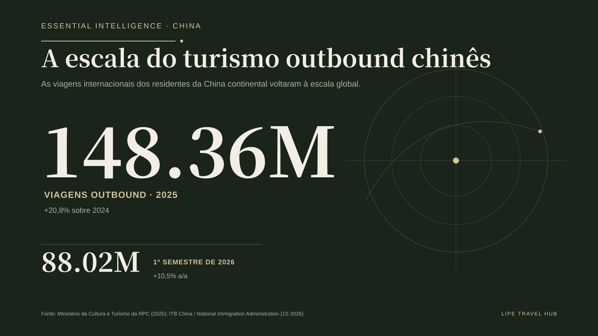
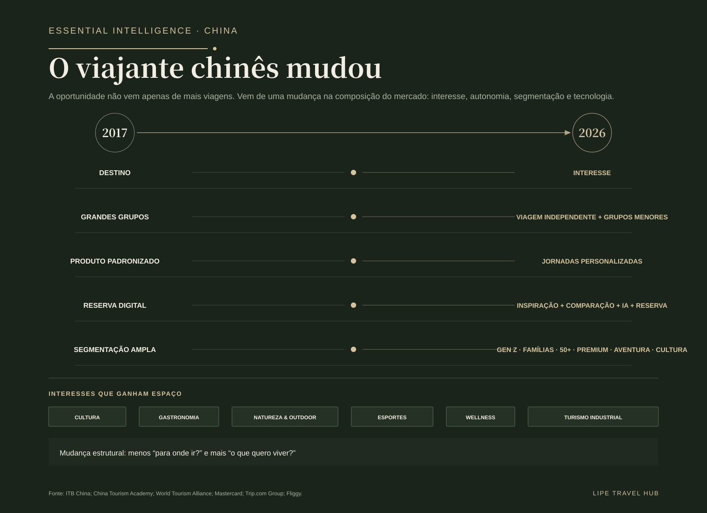
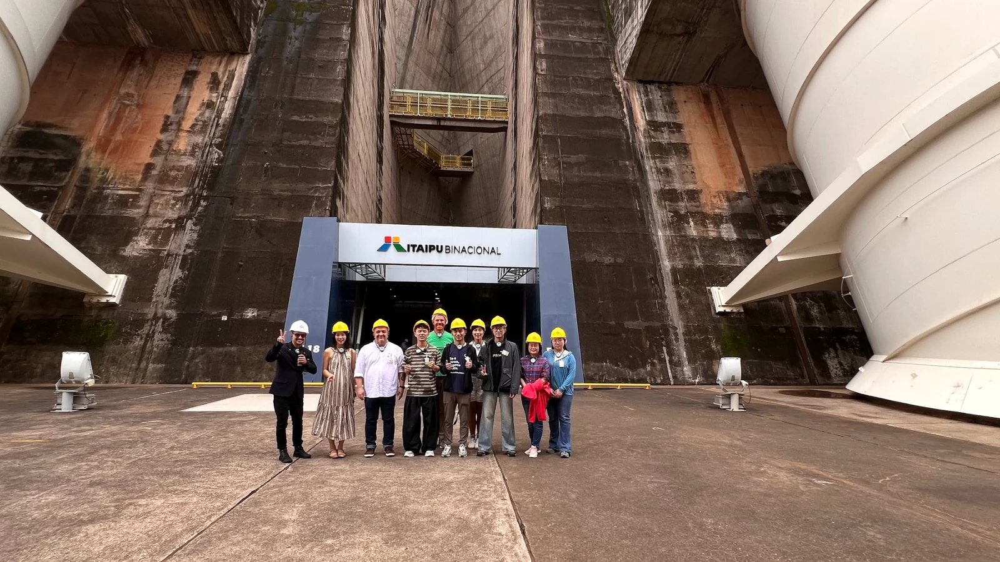
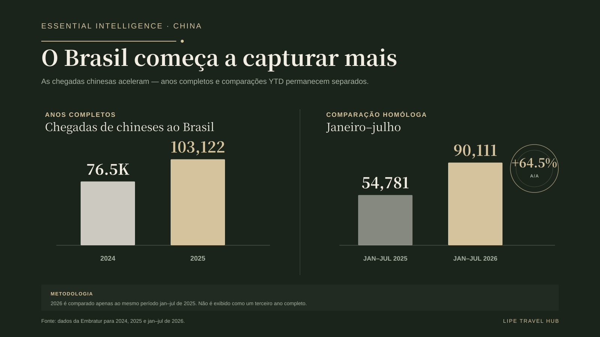
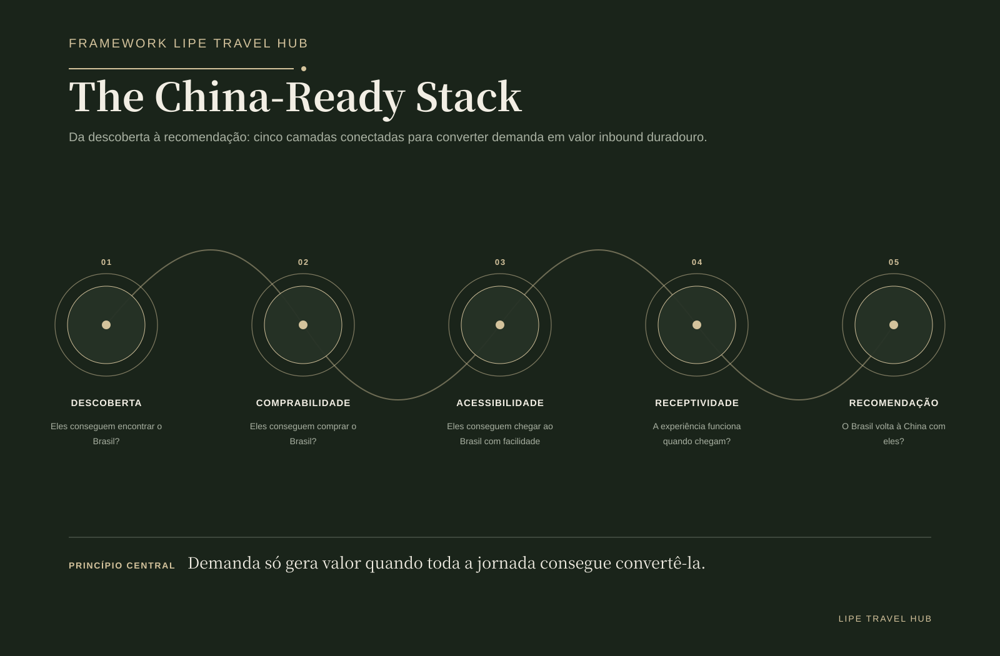
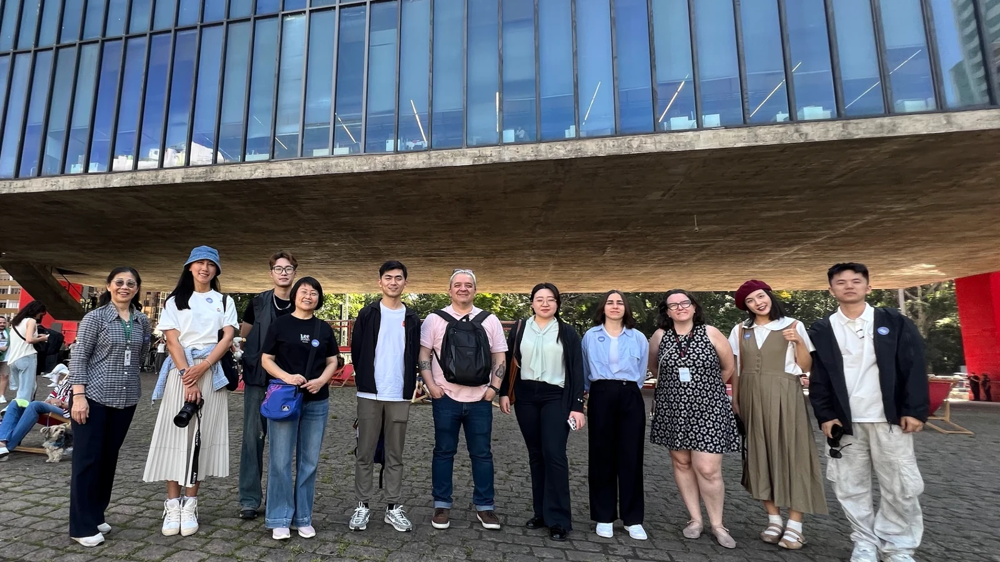
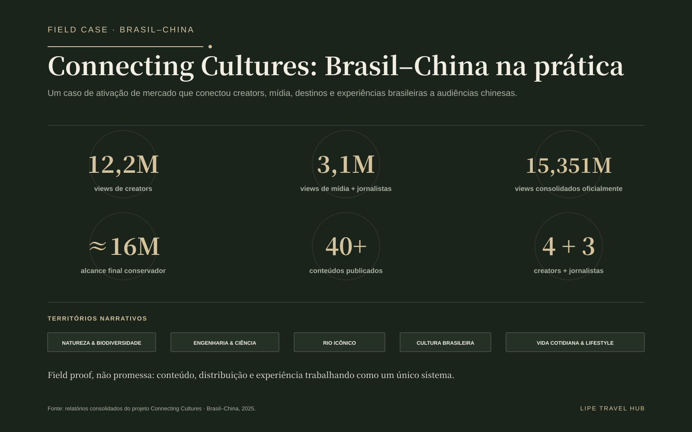
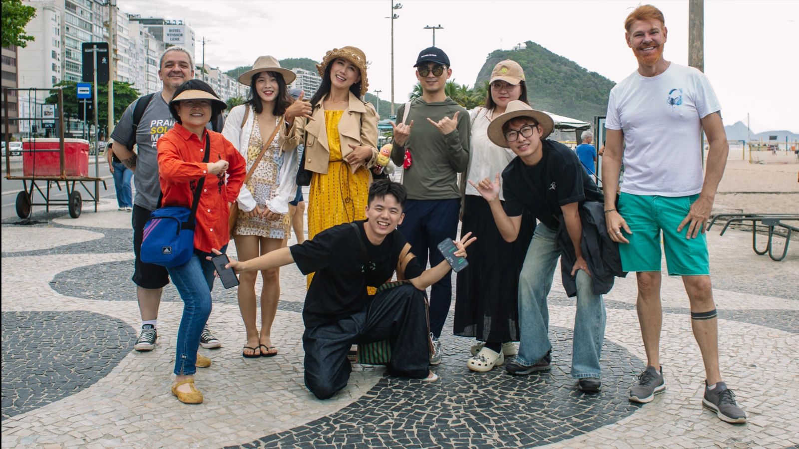

A escala voltou. A disputa também.
A China voltou a viajar em escala. Em 2025, o mercado registrou 148,36 milhões de viagens outbound, alta de 20,8% sobre o ano anterior. No primeiro semestre de 2026, foram 88,02 milhões, mais 10,5% em relação ao mesmo período de 2025. Para o turismo global, a pergunta deixou de ser se a demanda chinesa voltaria — e passou a ser quais destinos conseguirão capturá-la com mais eficiência.
O Brasil também ganhou tração. Depois de receber 76,5 mil visitantes chineses em 2024, superou 103 mil em 2025. Entre janeiro e julho de 2026, foram 90.111 chegadas, contra 54.781 no mesmo período de 2025: crescimento de 64,5%. Os universos estatísticos são diferentes — viagens outbound chinesas não equivalem a chegadas internacionais no Brasil —, por isso esses números não devem ser tratados como “market share”. Eles mostram escala e distância competitiva.

Entrar no radar global é só o começo.
Até 2024, viajantes chineses já haviam alcançado mais de 210 países e regiões. Quase 20 destinos recebiam mais de 1 milhão de visitantes chineses e mais de 60 superavam 100 mil. O Brasil ter ultrapassado 100 mil em 2025 é um marco relevante, mas também revela a faixa competitiva em que o país apenas começa a entrar.
A redução de fricção de entrada em 2026 ajuda, mas acesso não é conversão. Facilitar a entrada é diferente de facilitar descoberta, comparação, compra, recepção e recomendação. A vantagem real será construída na capacidade de transformar interesse em produto distribuível.
O viajante chinês mudou mais em composição do que em escala.
Comparar 2017 com 2025 apenas como uma história de recuperação perde a transformação mais importante. A lógica de viagem migrou de destination-led para interest-led; grandes grupos convivem com viagens independentes e grupos menores; produtos padronizados cedem espaço a jornadas personalizadas; e a jornada digital passa a combinar inspiração, comparação, IA e compra.
A segmentação também aprofundou. Gen Z, famílias, silver travelers, premium, aventura e cultura pedem propostas diferentes. E o repertório de interesses se ampliou: cultura, gastronomia, natureza e outdoor, esportes, wellness e turismo industrial ganham espaço como motivadores reais de viagem.

O Brasil tem ativos. O desafio é transformá-los em produto comprável.
Ter uma atração não é o mesmo que ter um produto internacional. Para entrar na jornada de compra, o ativo precisa estar descrito de forma compreensível, precificado, disponível, distribuído, conectado à logística e preparado para receber o visitante.
Itaipu ilustra essa oportunidade. O Brasil pode vender mais do que natureza e cartões-postais: engenharia, ciência, energia e turismo industrial podem conversar com segmentos movidos por interesse. O ganho estratégico está em organizar esses ativos como experiências encontráveis e reserváveis.


O novo campo de disputa é digital.
Descoberta social, Xiaohongshu, WeChat, Weibo, OTAs e plataformas chinesas, creators, conteúdo estruturado e planejamento assistido por IA estão comprimindo a distância entre inspiração e compra. O produto precisa ser legível não apenas para o viajante, mas para os sistemas que passam a organizar a viagem por ele.
Isso muda a agenda de destinos e empresas: conteúdo localizado, dados estruturados, inventário claro, canais de distribuição e presença nas plataformas relevantes deixam de ser “marketing para China” e passam a integrar a infraestrutura comercial do mercado.
The China-Ready Stack
O Lipe Travel Hub organiza essa capacidade em cinco camadas conectadas: Discoverability, Bookability, Accessibility, Receivability e Advocacy. Nenhuma funciona isoladamente. Ser encontrado sem poder ser comprado cria fricção; vender sem preparar a experiência compromete reputação; receber bem sem gerar advocacy desperdiça valor depois da viagem.
China-ready, portanto, não significa apenas traduzir. Significa construir uma jornada coerente entre desejo, distribuição, acesso, operação e recomendação.

Field Case: Connecting Cultures
O projeto Connecting Cultures, realizado em 2025, oferece evidência de campo sobre como diferentes narrativas brasileiras ativam interesses distintos. Quatro creators e três jornalistas percorreram São Paulo, Foz do Iguaçu e Rio de Janeiro, produzindo conteúdo em torno de natureza e biodiversidade, engenharia e ciência, Rio icônico, cultura brasileira e vida cotidiana.
Os resultados consolidados incluíram 12,2 milhões de visualizações de creators, 3,1 milhões de visualizações de mídia e jornalistas, 15,351 milhões oficialmente consolidadas e aproximadamente 16 milhões de alcance final conservador considerando crescimento posterior e reposts, além de mais de 40 peças publicadas. O ponto não é o volume isolado: é a demonstração de que não existe uma única narrativa de Brasil para a China.



Conectividade continua sendo a grande fricção estrutural.
O Brasil não pode competir com destinos asiáticos de curta distância em conveniência. Precisa competir em singularidade, densidade de experiência e valor percebido. Isso torna conectividade parte da estratégia de produto — não apenas tema de aviação.
A infraestrutura institucional Brasil–China, incluindo ações de promoção, facilitação e cooperação, ajuda a reduzir barreiras. Mas o resultado comercial dependerá da capacidade de destinos e empresas de transformar essa base em oferta efetivamente comprável.
A oportunidade Brasil–China: sete movimentos que importam agora.
- Pare de traduzir. Comece a localizar.
- Torne o turismo brasileiro comprável.
- Desenhe para interesses, não apenas destinos.
- Construa uma jornada China-ready.
- Trate conectividade como estratégia de produto.
- Transforme visitantes em mídia.
- Meça conversão, não apenas visibilidade.
O Brasil não precisa conquistar 148 milhões de viagens. Precisa melhorar a capacidade de converter uma parcela pequena, crescente e de alto valor desse fluxo. A oportunidade já está em movimento. A próxima fase deve ser medida menos pelo potencial declarado e mais pela captura real.
Fontes e metodologia
Fontes e metodologia: ITB China; Ministry of Culture and Tourism of the People’s Republic of China; National Immigration Administration of China; China Tourism Academy; World Tourism Alliance; Mastercard; Trip.com Group / Ctrip; Fliggy; Embratur; Ministério do Turismo / Gov.br; Itamaraty; fontes oficiais de aviação já validadas no trabalho editorial; relatórios consolidados do Connecting Cultures. Viagens outbound chinesas e chegadas internacionais ao Brasil são universos estatísticos distintos e são utilizadas aqui para leitura de escala, não para cálculo direto de participação de mercado.